{
"frames": 485,
"csv_rows_raw": 485,
"sampling_stride": 1,
"videos": [
"archive_flood_1955_592765.mp4"
],
"modes": [
"combined"
],
"active_tools": [
"detect_combined"
],
"altitudes_m": [
50.0
],
"frame_idx_range": [
0,
484
],
"mean_latency_ms": 38.485958762886604,
"std_latency_ms": 7.236696925738303,
"mean_fps": 26.91121649484536,
"std_fps": 5.131505542910135,
"mean_flood_ratio": 0.725400618556701,
"mean_human_count": 0.0,
"lifecycle": {
"active_tool": "detect_combined",
"benchmark_mode": "combined",
"model_load_events": 1,
"model_reload_events": 0,
"clf_load_ms": 51.35,
"seg_load_ms": 41.61,
"human_load_ms": 1.68,
"model_load_total_ms": 94.64,
"unload_events": [],
"first_frame_latency_ms": 59.3,
"steady_latency_ms": {
"mean": 38.44,
"p50": 37.74,
"p95": 49.99,
"frames": 484
}
}
}
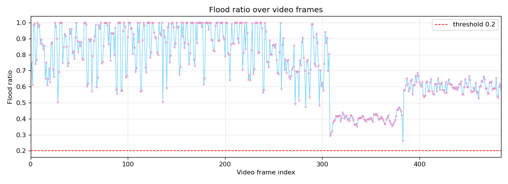
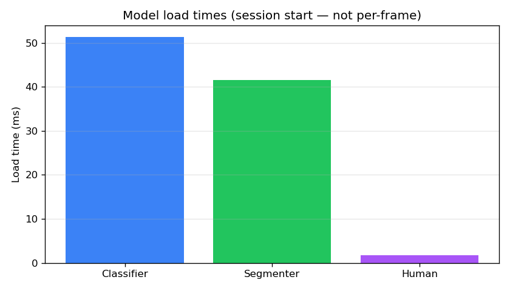
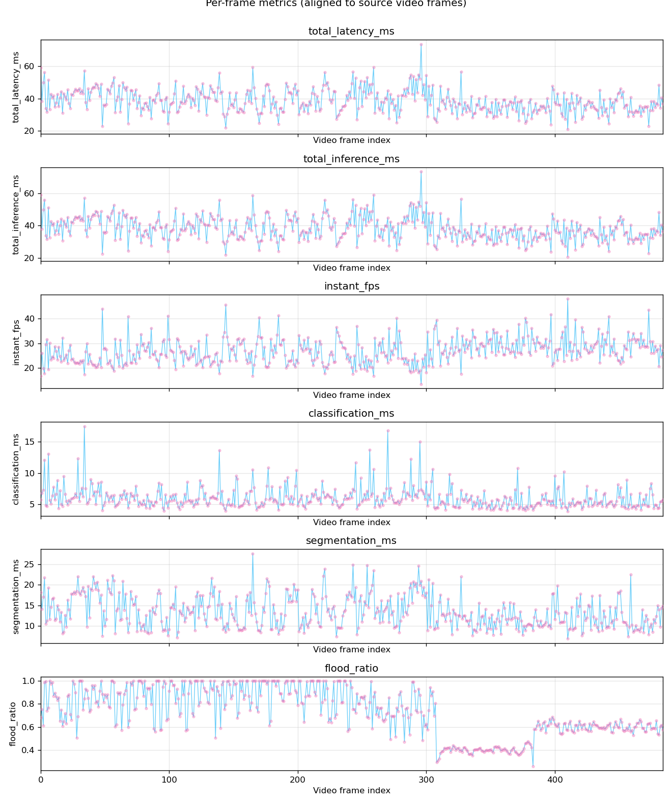
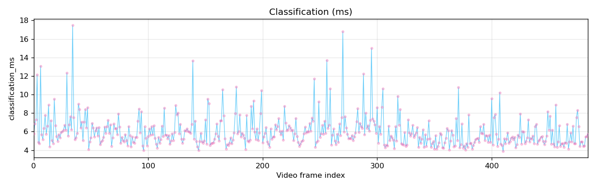
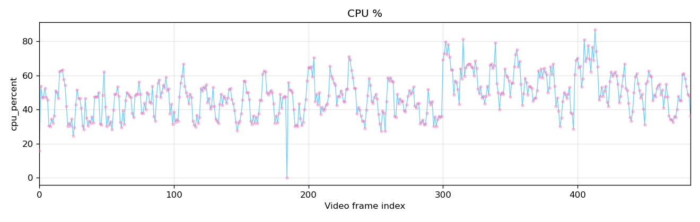
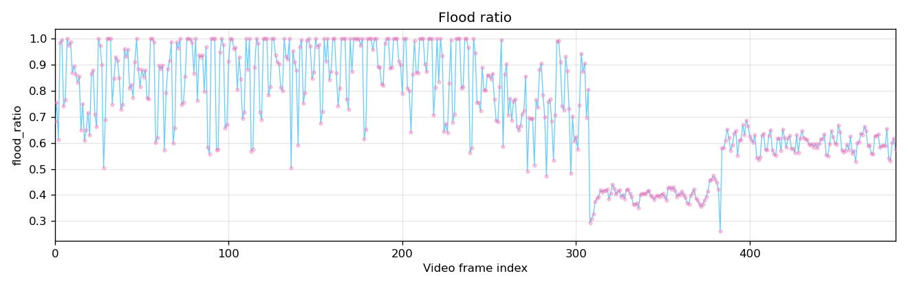
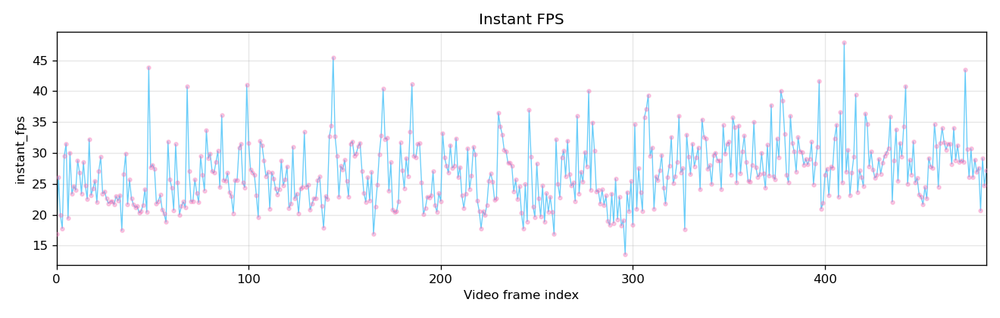
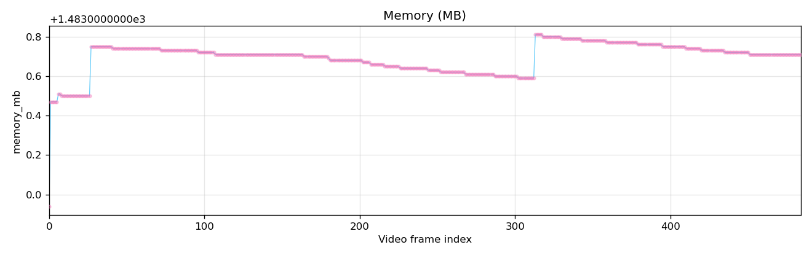
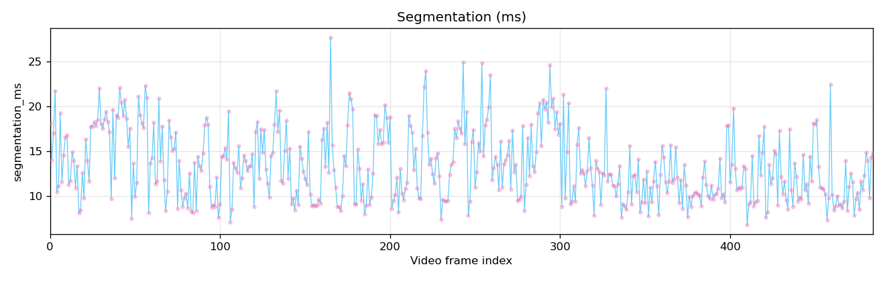
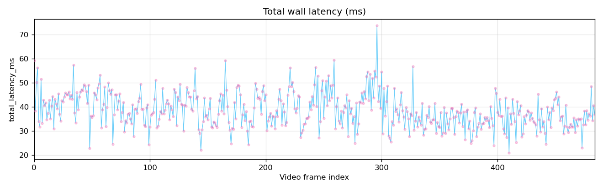
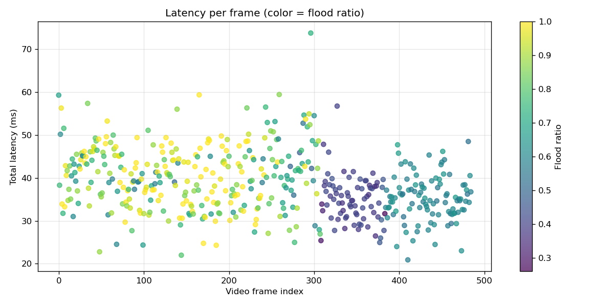